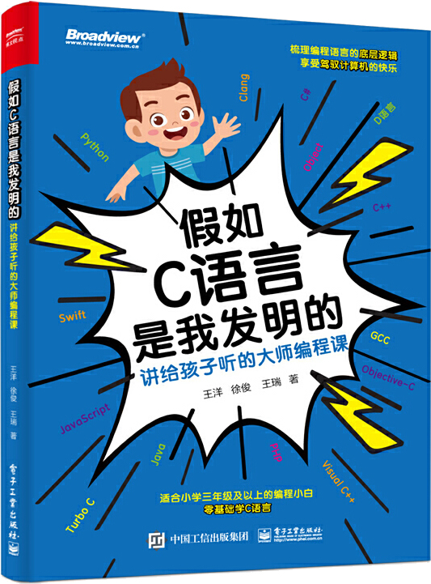

首页 > 书籍下载
《假如C语言是我发明的:讲给孩子听的大师编程课》PDF下载（高清完整版）
|  | 作者：王洋 徐俊 王瑞 |
| 出版时间：2022年10月01日 | |
| 出版社：电子工业出版社 | |
| 书号ISBN：9787121442315 | |
| 总页数：220 | |
| 总字数：19.6W |
这是一本专门为初学者编写的 C 语言入门书籍，尤其适合对编程感兴趣的小学生。
这里提供的是《假如C语言是我发明的:讲给孩子听的大师编程课》的高清 PDF 下载，内容完整，附带目录标签。
这本书采用作者和瑞瑞一问一答的形式，通过回答瑞瑞的问题，作者循序渐进地讲解 C 语言的语法规则。此外，书中还精心编排了大量的编程任务，只要读者跟随本书实现这些程序，就能入门 C 语言。
自出版之日起，这本书赢得了众多读者的好评。比如，一位家长给出的评价：
C 语言是信奥路上的必选编程语言，这本书用父子对话的形式，不断解答孩子在学习编程语言过程中产生的疑问，使得本书的可读性很强、内容生动活泼。娃挺喜欢的，培养兴趣的目的实现了。
作为一名老程序员，建议初学者优先阅读像《假如C语言是我发明的:讲给孩子听的大师编程课》这样的入门级书籍，有一定的 C 语言基础之后，可以继续阅读《C Primer Plus(第6版)》这本书深挖 C 语言的底层知识。书籍目录
- 第1章 程序小萌新“Hello World!” 1
- 1.1 人类天生就是程序员 2
- 1.2 驾驭计算机 4
- 1.3 编程的魅力 5
- 1.4 我们发明的C语言，计算机认识吗 6
- 1.5 “Hello World!”是个“梗” 7
- 1.6 出发！编程大神 10
- 1.7 让我们的程序运行起来 11
- 1.8 输出没那么容易 16
- 第2章 计算机是个数学天才 21
- 2.1 先算个1 2吧 22
- 2.2 C 的显示进化 24
- 2.3 计算机只会算加法 26
- 2.4 小学生的除法 27
- 2.5 小学生会余数 29
- 2.6 C语言也遵守优先级 30
- 第3章 过目不忘的计算机 31
- 3.1 内存和外存是个天才的设计 32
- 3.2 数据有类型 33
- 3.3 给内存地址起个名字 35
- 3.4 计算机认识整数 36
- 3.5 变量赋值 38
- 第4章 只认识0和1的计算机 40
- 4.1 内存地址长啥样 41
- 4.2 计算机只有两个手指头 42
- 4.3 在二进制和十进制之间穿梭 45
- 4.4 不是只有二进制 47
- 第5章 终于能够输入了 49
- 5.1 能保存，才能输入 50
- 5.2 C 的输入 51
- 5.3 计数器 53
- 第6章 多种多样的数据类型 55
- 6.1 整数类型的基础知识 56
- 6.2 字符类型 57
- 6.3 ASCII编码 57
- 6.4 小数类型 60
- 6.5 整数类型还没完 64
- 第7章 高级运算能力 66
- 7.1 数学运算符的运用 67
- 7.2 显示二进制数 69
- 7.3 拆解数字的每位 70
- 7.4 字符的运算 71
- 7.5 赋值竟然也是运算 72
- 7.6 交换两个变量的值 74
- 7.7 逗号也是运算符号 75
- 第8章 能够支持所有的运算，太“天才”了 77
- 8.1 负数的表示 78
- 8.2 按位非运算 82
- 8.3 按位与运算 82
- 8.4 按位或运算 83
- 8.5 按位异或运算 83
- 8.6 移位运算 84
- 第9章 计算机聪明的根源 86
- 9.1 会判断的程序才聪明 87
- 9.2 找出更大的数 88
- 9.3 等于号是个陷阱 89
- 9.4 判断大小写字母 90
- 9.5 非法的成绩 92
- 9.6 好学生划分 94
- 9.7 不仅仅判断大小写 96
- 9.8 简易计算器 96
- 第10章 处理大量的数据 99
- 10.1 数组 100
- 10.2 数组元素交换 104
- 10.3 集体后移 104
- 10.4 数组地址的秘密 105
- 10.5 字符串 106
- 第11章 疯狂运算的计算机 110
- 11.1 while循环 111
- 11.2 数字累加 113
- 11.3 统计字符串中字符的数量 115
- 11.4 将字符串中的小写字母变成大写字母 115
- 11.5 大小写字母的相互转换 116
- 11.6 break和continue 118
- 11.7 人性化的for循环 120
- 11.8 判断质数 122
- 11.9 水仙花数 123
- 第12章 烧脑的循环 126
- 12.1 100~200中的质数 127
- 12.2 画出一个矩形 129
- 12.3 画出一个三角形 130
- 12.4 九九乘法表 132
- 12.5 陶陶摘苹果 133
- 12.6 级数求和 136
- 第13章 二维的世界 138
- 13.1 二维数组是骗人的 139
- 13.2 翻转照片 142
- 13.3 邪恶的指针 143
- 第14章 团队作战 147
- 14.1 Hello！函数 148
- 14.2 参数的困局 153
- 14.3 在函数中指针的特别功效 156
- 14.4 引用才是进化方向 158
- 14.5 用数组做参数 160
- 14.6 判断质数 162
- 14.7 字符串原地逆序 163
- 14.8 用函数实现求水仙花数 164
- 第15章 管辖范围 166
- 15.1 神奇的大括号 167
- 15.2 大部分都是局部变量 168
- 15.3 终极全局变量 170
- 15.4 静态局部变量 172
- 第16章 排排坐、分果果 175
- 16.1 选择排序 176
- 16.2 冒泡排序 182
- 16.3 插入排序 188
- 16.4 桶排序 190
- 16.5 随机数 191
- 16.6 二分查找 197
- 第17章 复杂的数据 201
书籍下载
一键登录，免费下载完整版 PDF，文件名称：《假如C语言是我发明的:讲给孩子听的大师编程课》.pdf